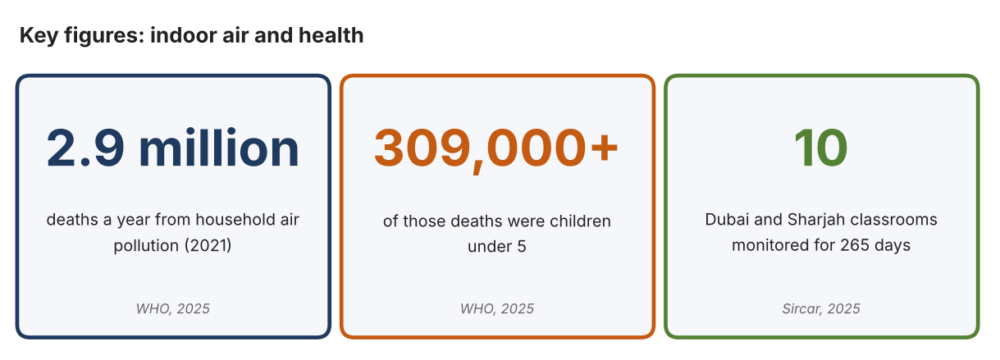
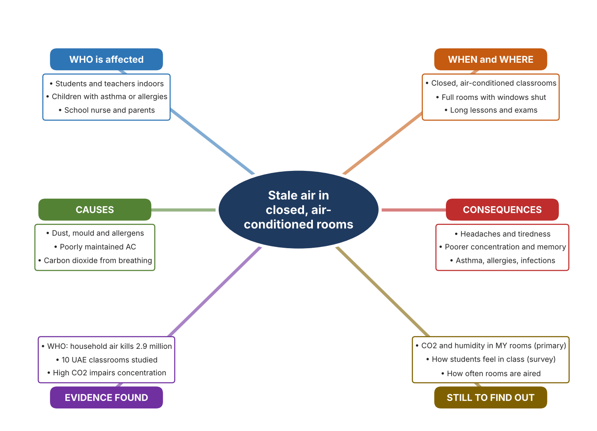
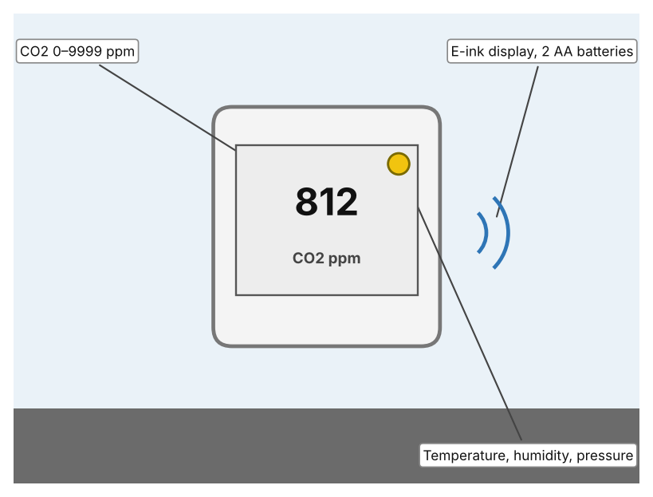
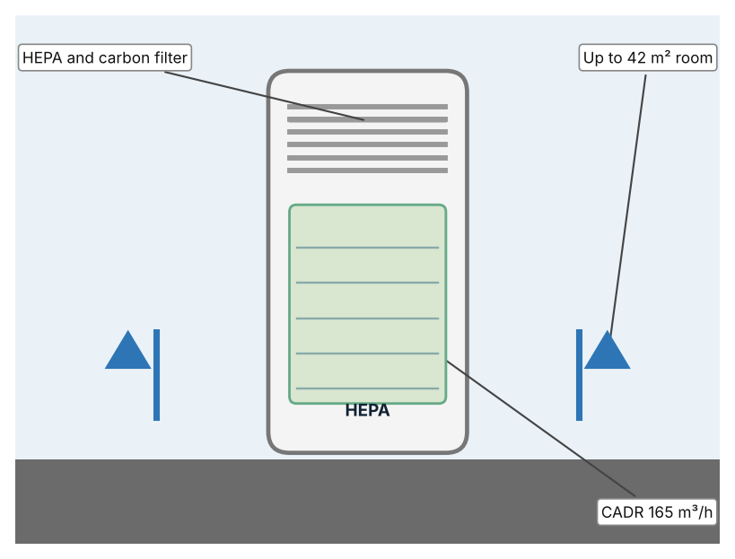
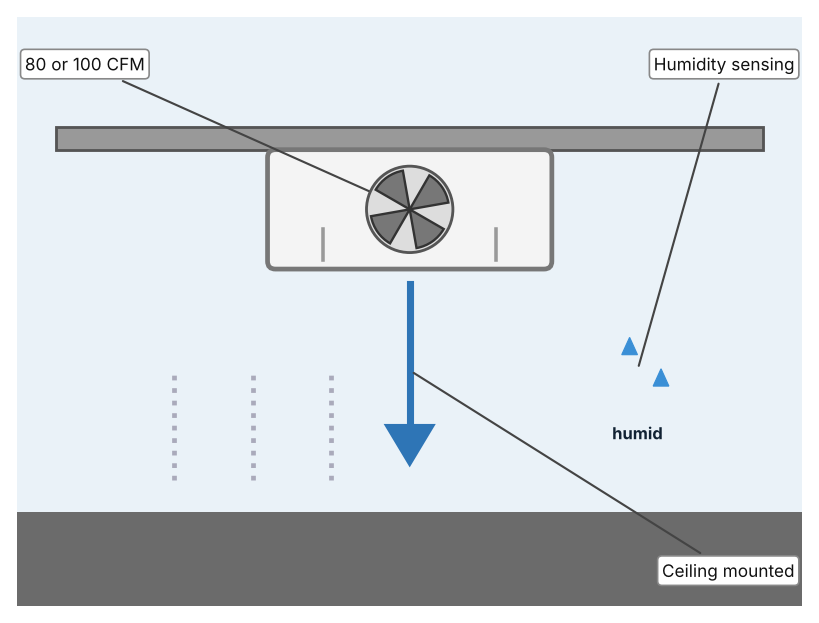

A1 · Design need
Identify and explain the problem faced by your client and community.
My client is the Facilities and Wellbeing Team of a Dubai school, represented by the Facilities Manager. Classrooms are air-conditioned with windows closed for most of the year, and teachers say that rooms feel stuffy and students become sleepy in the afternoon. The team needs the quality of the air inside classrooms to be known and kept healthy, using measurements and not guesses.
The people most affected are students and teachers who spend many hours in the same room, because they breathe the same air all day. Students with asthma or allergies are a second group, because indoor dust and mould can trigger their symptoms. The school nurse and parents are a third group, because they hear about headaches, tiredness and coughs.
The need is real because indoor air has health effects. A Khaleej Times report on a study of ten classrooms in Dubai and Sharjah over 265 days says that air conditioning, if not properly maintained, can circulate dust, mould and allergens, and that high carbon dioxide impairs concentration, memory and decision-making (Sircar). The World Health Organization reports 2.9 million deaths a year from household air pollution in 2021, including more than 309,000 children under five, although most of this comes from cooking with polluting fuels, which is not the situation in a UAE classroom (World Health Organization). The Khaleej Times article gives no carbon dioxide or dust figures, so I do not know the real levels in my school.
Figure 1 summarises the key numbers. The WHO figures describe a different cause of indoor pollution and the UAE report gives no measurements, so I treat them as a pattern and not as proof about my classrooms. In my own words: stale air is invisible, but people feel its effects. Figure 2 is my mind map of the problem.
300 words


A2 · Research plan
Six research questions of different types, each with a priority, a research type and evidence.
| # | Question | Priority | Primary / secondary | Evidence | Brief answer |
|---|---|---|---|---|---|
| 1 | Factual: How many deaths are linked to household air pollution, and what causes it? | High | Secondary | WHO fact sheet, 2025 (Appendix A, Source 1) | 2.9 million deaths in 2021, including over 309,000 under five; about 2.1 billion people cook with open fires or inefficient stoves; linked to stroke, heart disease, COPD and lung cancer. |
| 2 | Factual: What did a UAE classroom study report about indoor air in schools? | High | Secondary | Khaleej Times, 9 Sept. 2025 (Appendix A, Source 2) | Ten classrooms in Dubai and Sharjah were monitored for 265 days; poorly maintained AC can spread dust, mould and allergens; humidity encourages mould; high CO2 impairs concentration. No figures were given. |
| 3 | Conceptual: How is indoor air quality measured, and what does CO2 tell us? | Medium | Secondary | Aranet page (Source 3) | A CO2 monitor reads parts per million, plus temperature, humidity and pressure; high CO2 shows that fresh air is not replacing breathed air. |
| 4 | Debatable: Should schools improve indoor air by monitoring it, by cleaning it with a purifier, or by ventilating more? | Medium | Secondary | Appendix A, Sources 3, 4 and 5 | A monitor tells when action is needed; a purifier removes particles but not CO2; a fan exchanges air but uses energy and can bring in hot air. My view: monitor first so action is targeted. |
| 5 | Debatable (challenges my assumption, UAE source): Air-conditioned rooms are clean because the air is filtered, so indoor air in UAE schools is not a problem. | High | Secondary | Khaleej Times, 2025 (Source 2) | The report says AC that is not properly maintained can circulate pollutants, dust, mould and allergens, and humidity can encourage mould. Whether my school has a problem depends on maintenance, so I must measure. |
| 6 | Factual (primary): What CO2, temperature and humidity levels do our classrooms reach during a day, and how do students feel? | High | Primary | Own air log and student survey (Appendix A, Sources 6 and 7) | [Student data needed: write the CO2, temperature and humidity readings (with the time and number of people) and survey averages, then two sentences on the pattern you see.] |
A3 · Existing products
Three significantly different products, each analysed with ACCESS FM, with pros and cons.
Product 1: CO2 monitor (Aranet4 HOME)

Illustration by the author based on the Aranet4 datasheet, Aranet (Appendix A, Source 3). [Student: replace with a photo from the source, cited MLA 9]
Product 2: Air purifier (Philips 2000 Series AMF220/95)

Illustration by the author based on the Philips AMF220/95 brochure, Philips (Appendix A, Source 4). [Student: replace with a photo from the source, cited MLA 9]
Product 3: Humidity-sensing exhaust fan (Panasonic Whisper Thin RG-T810HA)

Illustration by the author based on the Panasonic RG-T810HA listing, Do it Best (Appendix A, Source 5). [Student: replace with a photo from the source, cited MLA 9]
ACCESS FM analysis
| ACCESS FM | Product 1 | Product 2 | Product 3 |
|---|---|---|---|
| Aesthetics | Small square monitor with an e-ink display; not otherwise described (Aranet). | Tall white tower; looks are not described (Philips). | Slim ceiling grille; looks are not described (Do it Best). |
| Cost | Price not in the datasheet (Aranet). | Price not in the brochure (Philips). | US$189.99 (Do it Best). |
| Customer | Anyone who wants to see CO2 and comfort data. | Rooms of up to 42 m² where dust or allergens are a concern. | Bathrooms or small rooms where humidity builds up. |
| Environment | Two AA batteries last 1.4–1.8 years at a one-minute interval. | 47–61 dB(A) sound; filter replacement is needed (my inference). | Uses mains power; energy use is not described. |
| Size | 71 × 71 × 24 mm; 104 g. | 25 × 25 × 59 cm. | Size is not listed. |
| Safety | No hazard stated; IP20 rating. | Pre-filter, HEPA and carbon filters; 99.95% of particles as small as 0.003 µm. | Not stated. |
| Function | Measures CO2 to ±(30 ppm + 3%), temperature to ±0.3 °C and humidity to ±3%; Bluetooth to 10 m. | Cleans air at CADR 165 m³/h; also a fan heater. | Moves air at 80 or 100 CFM with humidity sensing; detail is limited. |
| Materials | Materials are not stated. | Materials are not stated. | Materials are not stated. |
Pros and cons
| Product 1 | Product 2 | Product 3 | |
|---|---|---|---|
| Pro | Shows the real CO2 level so action can be targeted. | Removes fine particles, dust and smells with a HEPA filter. | Removes humid air automatically. |
| Con | Only measures; it does nothing to improve the air. | Does not lower CO2 and covers only 42 m². | Designed for bathrooms and gives limited detail on how it senses humidity. |
A4 · Design brief
Restate the need, summarise the research and the existing products, and state the design intent.
My client, the Facilities and Wellbeing Team of a Dubai school, needs the quality of classroom air to be known and kept healthy, using measurements. The problem is real: a study of ten Dubai and Sharjah classrooms over 265 days warns that poorly maintained air conditioning can circulate dust, mould and allergens, and that high carbon dioxide impairs concentration and memory (Appendix A, Source 2). The WHO reports 2.9 million deaths a year from household air pollution, though mainly from cooking fuels (Appendix A, Source 1).
My research shows that the risks come from invisible things, so measurement is needed (Appendix A, Sources 2 and 3). The report I found gives no numbers, so I need my own evidence. My debatable questions led me to decide that monitoring, purifying and ventilating each cover only part of the problem, and my challenged assumption (that air-conditioned air is automatically clean) showed me that maintenance matters. I will gather my own evidence with the air log and the survey, always with permission (Appendix A, Sources 6 and 7).
I analysed three very different existing solutions. A CO2 monitor reads CO2, temperature and humidity and runs on two AA batteries for more than a year, but it does nothing to improve the air (Appendix A, Source 3). An air purifier filters 99.95% of fine particles with a HEPA filter, but it does not lower CO2 and covers only 42 m² (Appendix A, Source 4). A humidity-sensing exhaust fan removes humid air at 80 or 100 CFM, but it is designed for bathrooms and the page gives limited detail (Appendix A, Source 5). They give me three ideas for inspiration: measuring, cleaning and exchanging the air. Each has a weakness that another covers.
My design intent is therefore to create a solution that measures the quality of the air in a classroom and tells people clearly when it needs attention. It must be affordable, simple to read at a glance, safe in a classroom, and reliable through the school day. I have deliberately not fixed what form it will take. That decision will be made in Criterion B, after I analyse my own log and survey against the evidence in Appendix A.
367 words
Appendix A · Research notes and sources
Secondary sources in MLA 9, with notes and where each source is used.
| # | Source (MLA 9) | Key notes | Used in |
|---|---|---|---|
| 1 | World Health Organization. “Household Air Pollution.” WHO, 16 Dec. 2025, www.who.int/en/news-room/fact-sheets/detail/household-air-pollution-and-health. Accessed 21 Oct. 2026. | 2.9 million deaths a year in 2021, including over 309,000 under five; ambient plus household air pollution 6.7 million premature deaths; 2.1 billion cook with open fires or inefficient stoves; mostly about cooking fuels, not UAE classrooms. | A1; A2 Q1; A4. |
| 2 | Sircar, Nandini. “Are UAE Students Breathing Clean Air? Schools Face Hidden Pollution Risks.” Khaleej Times, 9 Sept. 2025, www.khaleejtimes.com/lifestyle/health/uae-classroom-air-quality-study-health-risks. Accessed 21 Oct. 2026. | Goumbook report “Take a Breath: Improving Indoor Air Quality”: ten classrooms in Dubai and Sharjah over 265 days; schools built 1970–2021; AC can circulate dust, mould and allergens; humidity encourages mould; VOCs; high CO2 impairs concentration; no PM or CO2 numbers. | A1; A2 Q2 and Q5; A4. |
| 3 | “Aranet4 HOME Datasheet.” Aranet, shop.aranet.com/attachment/267/Aranet4_datasheet_v25_WEB.pdf. Accessed 21 Oct. 2026. | CO2 0–9999 ppm ±(30 ppm + 3%); temperature 0–50 °C ±0.3; humidity 0–85% ±3%; pressure; e-ink; 2 AA, 1.4–1.8 years; 71 × 71 × 24 mm, 104 g; Bluetooth 10 m; IP20; price not stated. | A2 Q3 and Q4; A3 Product 1; A4. |
| 4 | “Philips 2000 Series 3-in-1 Purifier Fan Heater AMF220/95.” Philips, documents.philips.com/assets/20210528/ecb269bd0c474ddb95c3ad36012114d4.pdf. Accessed 21 Oct. 2026. | CADR 165 m³/h; up to 42 m²; pre-filter, HEPA and carbon; 99.95% of particles as small as 0.003 µm; 47–61 dB(A); 25 × 25 × 59 cm; price not stated. | A2 Q4; A3 Product 2; A4. |
| 5 | “Panasonic Whisper Thin 80/100 CFM Bathroom Fan with Humidity Sensing RG-T810HA.” Do it Best, www.doitbest.com (product 512933; search the product name). Accessed 21 Oct. 2026. | US$189.99; 80 or 100 CFM; humidity sensing with no detail given; sones and size not listed. The full page address is shortened, so search the site for the model name. | A2 Q4; A3 Product 3; A4. |
| 6 | Primary: classroom air log, completed by the student on [date]. Accessed own data. | [Student: summarise your counts.] | A2 primary question; A4. |
| 7 | Primary: survey of [number] people, completed on [date]. | [Student: summarise your averages.] | A2 primary question; A4. |
Primary research instrument 1: classroom air log
Student records readings with a CO2 monitor or the school's building system, with permission and a teacher present.
| Room and time | People in room | CO2 (ppm) | Temp (°C) | Humidity (%) | Stuffy? (Y/N) |
|---|---|---|---|---|---|
| Classroom, morning | |||||
| Classroom, midday | |||||
| Classroom, afternoon | |||||
| Library |
Primary research instrument 2: survey
Rate each statement from 1 (strongly disagree) to 5 (strongly agree). Collect responses with permission and record no names.
| Statement | 1 | 2 | 3 | 4 | 5 | Total responses |
|---|---|---|---|---|---|---|
| The air in my classroom feels stuffy by the end of a lesson. | ||||||
| I feel sleepy or get headaches in class. | ||||||
| Windows or doors are opened to refresh the air. | ||||||
| I would like to see the air quality in my classroom on a display. |